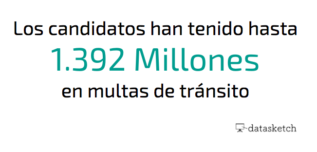

Encontramos ciertos datos curiosos sobre las elecciones al congreso 2018. Esta es su radiografía
Casi 3.000 candidatos peleando por 268 plazas
Este año se presentan al Congreso 2.735 candidatos: 1.794 aspiran a una silla en la Cámara y 853 quieren una en el Senado. Al final, solo habrá 268 candidatos: 102 senadores y 166 representantes a la cámara.
¿Equidad de género en los partidos?
Cada partido político en Colombia debe tener al menos un 30% de mujeres en sus listas de candidatos, según la Ley 1475 de 2011. Senadoras como Claudia López han hecho proyectos de Ley que buscan elevar la cuota al 50%, pero no han sido aprobadas aun. Así está la distribución de candidatas mujeres al congreso.
Los jóvenes se vinculan a la política
Si quieres postularte a la Cámara de Representantes debes tener al menos 25 años; si quieres ser candidato al Senado, la edad mínima son 30 años. Aunque se cree que los jóvenes no están interesados en política, este año el 10% de los candidatos son “millennials” nacidos después del año 1985.
Los candidatos se comparten el nombre
José y María son los nombre más comunes que hay entre los candidatos al Congreso. Ambos están entre los nombres preferidos por los colombianos para sus bebés.
Partidos con antecedentes en la Procuraduría
La Procuraduría hace públicas las sanciones o investigaciones disciplinarias de los últimos cinco años que tenga cualquier persona en Colombia. Si alguien tiene una anotación en esta base de datos significa que ha afectado directamente el comportamiento o desarrollo de las actividades del Estado.
Antecedentes en la Policía
La Policía Nacional hace públicos los delitos o investigaciones que haya cometido o que involucren a cualquier persona en Colombia. Estos son los candidatos que tienen alguna anotación en esta base de datos.
Contaduría General de la Nación
La Contaduría General de la Nación hace públicas las anotaciones que tienen todos los ciudadanos en temas de deudas con el estado. Aquí se muestra la información de los candidatos que aparecen en La Base de datos de Deudores Morosos del Estado BDME cuenta con alguna anotación.
Algunos han tenido contratos con el Estado
A pesar de que la Ley lo prohíbe, algunos candidatos tienen contratos con el Estado o han ejecutado recursos públicos. Esta información se encuentra en la base de datos conocida como SECOP . El candidato con mayor número de contratos acumula la suma de 307. Sin embargo, es importante aclarar que la búsqueda de contratos públicos puede arrojar resultados positivos para los congresistas que se reeligen, ya que para los contratos de sus equipos de trabajo se usa la cédula del congresista contratante.
Multas de tránsito
Varios candidatos al Congreso tienen multas de tránsito que no han pagado o multas millonarias que no pagaron nunca y se procedió con el cobro coactivo. Estas multas están registradas en la base de datos del SIMIT, la más bajita que se ha registrado es por $16,437.00 (ya pagó) y la más alta es por $115,748,074; el cual es un valor acumulado de 6 multas, dos de las cuales son por conducir en estado de ebriedad (las más costosas). De esas 6, 5 fueron saldadas por cobro coactivo y una por el valor de $52,713,646 está en mora desde el 2015.
Con muchas de las multas presentadas a continuación se procedió con el cobro coactivo, en el que se ordena la práctica de medidas cautelares; embargo de bienes, salarios, dineros de cuentas bancarias, etc.
Los datos retratados en este artículo y los publicados en el especial corresponden al esfuerzo el equipo investigativo de datos de Datasketch. Datasketch ha tomado grandes medidas para garantizar que la información es actual y precisa. Confiamos en los esfuerzos de nuestro equipo y las tecnologías utilizadas publicar la mejor información disponible consolidando múltiples fuentes. Los datos se publican como tal, con licencia abierta de Creative Commons y sin garantía. Datasketch no se hace responsable por cualquier acción derivada del uso de esta información agregada. Los usuarios asumen toda responsabilidad y riesgo sobre el uso de los datos disponibles en este especial y sitio. Para garantizar la fiabilidad de la información en trabajos derivados de estos datos, los usuarios garantizan que cualquier uso será contrastado con las fuentes oficiales descritas en la metodología.